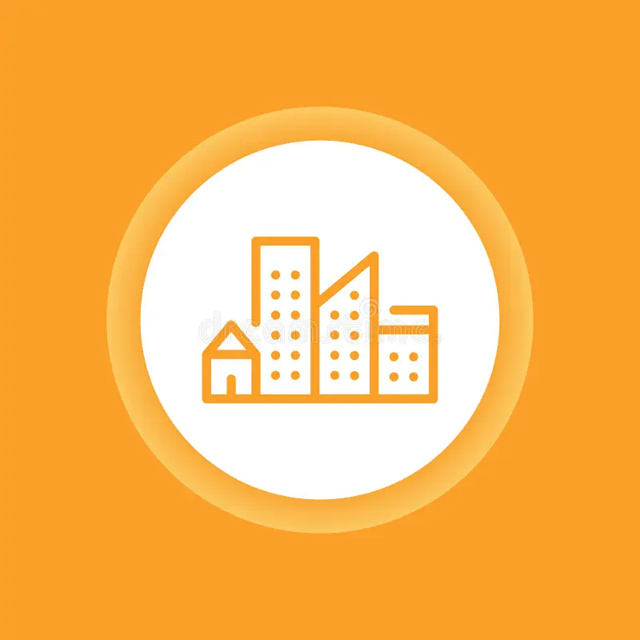

SDG 3: Good Health and Well-Being
By forecasting air quality and reducing exposure to pollutants, we actively protect vulnerable populations and promote healthier communities through preventative action.

SDG 11: Sustainable Cities and Communities
Our platform empowers local authorities and citizens to make informed decisions that enhance urban resilience and sustainability against environmental hazards.
SDG 13: Climate Action
By leveraging data-driven insights and advanced modeling, we contribute to the global effort of understanding and mitigating the impacts of climate-related phenomena on air quality.
SDG 17: Partnerships for the Goals
Our work embodies collaboration, integrating data from satellites, ground stations, and meteorological services, fostering partnerships across disciplines and sectors.